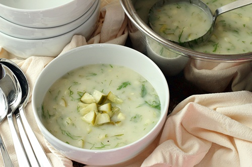

Introduction
My name is Kalinda, and I write the blog Wheat-Free Meat-Free. I started the blog in 2008. It's a recipe blog. All the recipes it features are gluten-free and vegetarian.
When I started, I had some idea of what I was doing with regards to cooking, and no idea what I was doing with regards to photos. Now, I have a pretty good idea what I am doing with regards to cooking and middling photography skills!
Favorite Recipes
There are approximately 230 recipes on the blog. These are some of my favorite recipes:
Cookbook
I also have a cookbook based on my blog. It took a long time to write. I will not be writing another one.

(The dill pickle soup is actually in the cookbook. I like it that much.)